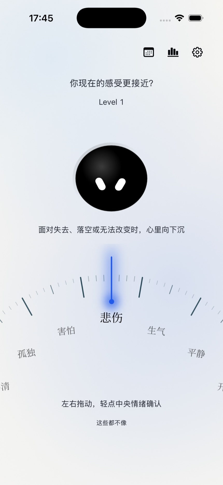
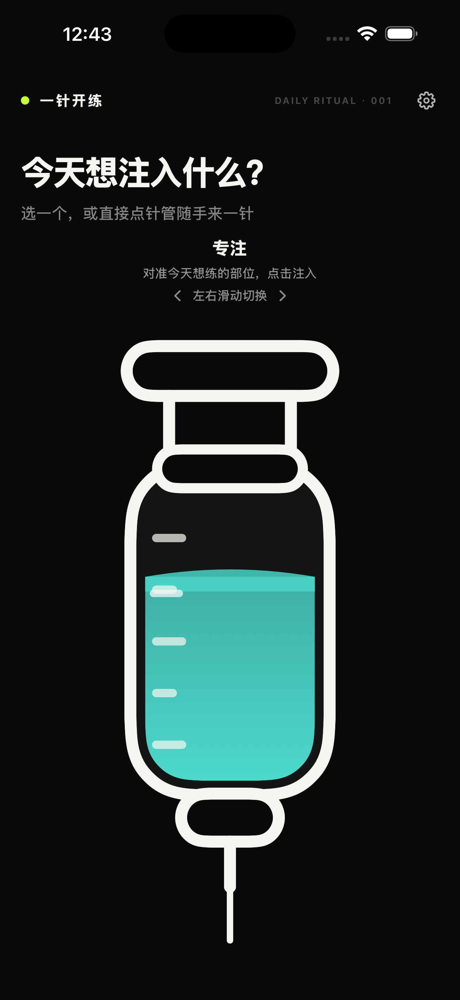
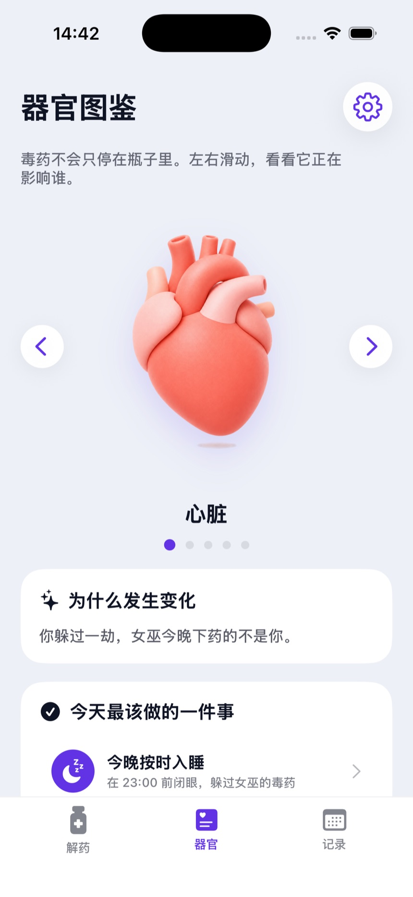

BOFAN SUN
产品设计 · 独立开发 · AI 辅助创作
BorisSuen0424@icloud.com独立开发者，
把日常的小问题做成 App。
独立开发者，
把日常的小问题做成 App。
把「说不清」的感受，变成说得出的记录。从一个宽泛的情绪开始，沿着刻度逐层靠近自己。
将自由表达拆成三次渐进选择，控制选择负担；强度和来源放在同一页，让一次记录更连贯。
三级情绪选择 · 强度与来源 · 情绪日历
给「想练但还没开始」的时刻一个小仪式。选状态、虚拟注入、跟练一组，在完成反馈里获得下一次开始的动力。
围绕「一组动作」设计最小体验，用虚拟注入形成启动仪式；训练按节奏计数或计时，减少中途操作。
启动仪式 · 节奏跟练 · 本地打卡
用女巫、毒药与解药的故事表达作息状态，让器官角色和桌面小组件成为每天睡前与起床时的轻提醒。
用故事和角色状态表达时间变化；手动记录作为输入，器官变化是游戏化表达，不代表健康检测。
拟人化反馈 · 桌面小组件 · 作息打卡
把一个抽象的世界观，落实到角色、任务与状态变化中，以短片记录当前的视觉与交互叙事探索。
视觉设定 · 交互叙事 · 视频演示
孙勃帆
产品设计 · 独立开发 · AI 辅助创作